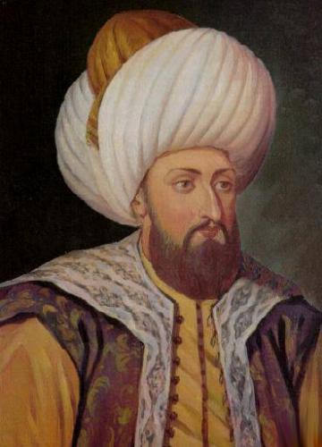

|
 |
YILDIRIM BEYAZIT Murad Hüdâvendigâr'in oglu, 4. Osmanli padisahi. Tahta çikar çikmaz Sirbistan bölgesindeki huzursuzluklari, ardindan halka zulüm yapan ve Osmanlilara bas kaldiran Anadolu Beylikleri'nin çikardigi ayaklanmalari bastirdi. Izmir haricinde bütün Bati Anadolu'yu Osmanli idaresine katti. Yildirim Beyazid, bir kaç kere Itsanbul'u da kusatmis, bu maksatla Anadolu (Güzelce) Hisari'ni yaptirmistir. Fakat her defasinda kusatmayi yarim birakmak zorunda kalmistir. 1396 Nigbolu zaferi tek basina Osmanli'nin, Avrupa devletlerine karsi kazanilan en önemli savaslardan birisidir. Bu zafer Bati dünyasinin yani sira doguda da Osmanli Türk devletinin taninmasina sebep olmustur. Misirdaki Abbasi Halifesi, Yildirim Beyazid'e gönderdigi tebrikte "Sultan-i Iklim-i Rum " diye hitap etmistir. Öte yandan Yildirim'in güneyde Firat boylarina kadar genislettigi fetih hareketi, Bizans'in Istanbul Bogazi ve izmit Körfeszi'ni vurmasi üzerine yarim kaldi ve Yildirim Beyazid Istanbul'a dönerek tekrar kusatti. Ancak bu sefer de doguda Timur tehlikesi basgösterdi. Yildirim'dan öç almak isteyen Beylikler, Timur'a destek verdiler. Nihayet Ankara Çubuk ovasi çetin bir muharebeye sahne oldu. Esir düsen Yildirim, 7 ay sonra bu esarete dayanamayarak 1403'de vefat etti. |